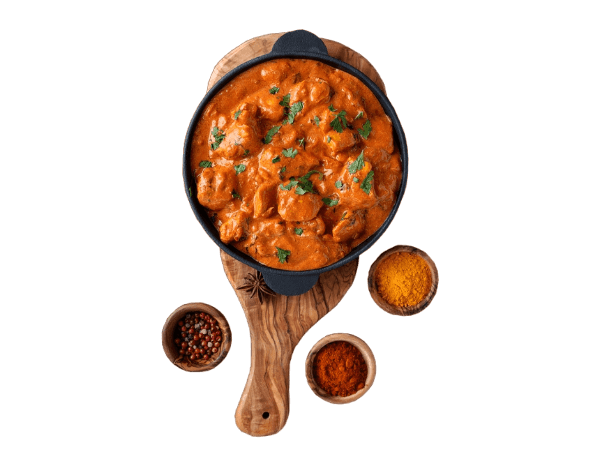

Freshness
in every bite
Classic butter chicken with tender chicken pieces cooked in a rich and creamy tomato-based sauce, infused with aromatic spices.

Classic butter chicken with tender chicken pieces cooked in a rich and creamy tomato-based sauce, infused with aromatic spices.
Marinate the Chicken:
In a bowl, mix together yogurt, lemon juice, turmeric, garam masala, ground cumin, paprika, minced garlic, and minced ginger. Add the boneless, skinless chicken thighs or breasts (cut into bite-sized pieces) to the marinade. Cover the bowl and refrigerate for at least 1 hour, preferably overnight.Preheat the Oven:
Preheat your oven to 400°F (200°C).Bake the Chicken:
Place the marinated chicken pieces on a baking sheet. Bake for 20-25 minutes or until the chicken is cooked through.Prepare the Sauce:
In a large skillet, melt butter over medium heat. Add finely chopped onion to the skillet and cook until translucent. Stir in tomato puree and cook for 5 minutes. Add heavy cream to the skillet and simmer for another 5 minutes.Combine Chicken and Sauce:
Once the chicken is baked, add it to the skillet with the sauce. Cook for an additional 10 minutes, stirring occasionally to ensure the chicken is coated in the sauce and heated through.Season and Garnish:
Season with salt to taste. Garnish with fresh cilantro leaves before serving.Serving:
Serve the butter chicken hot, garnished with fresh cilantro leaves. Enjoy with cooked rice or naan bread on the side. This method will help you create a delicious butter chicken dish with tender chicken pieces in a rich and creamy tomato-based sauce, infused with aromatic spices. Enjoy your meal!